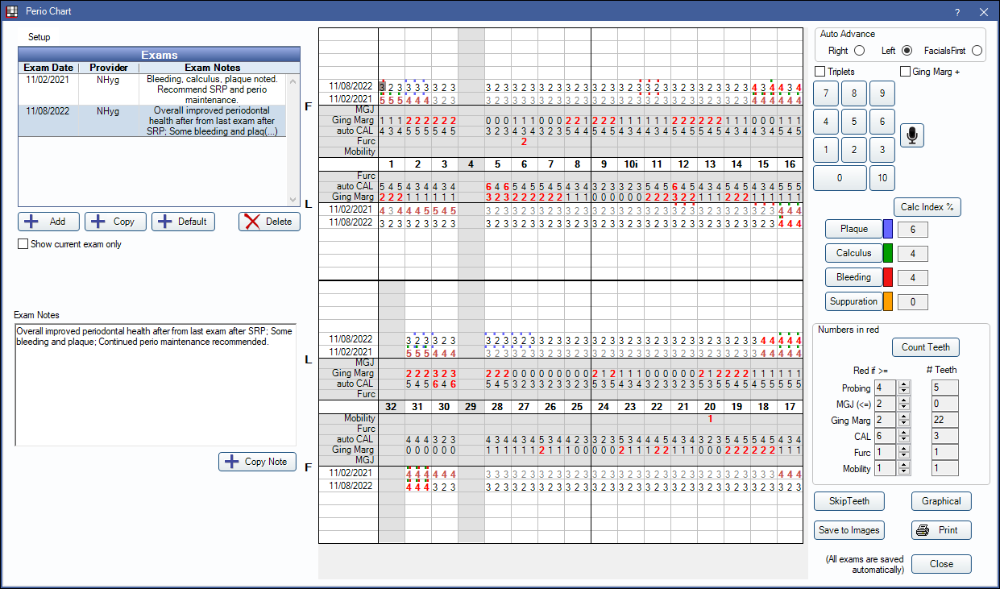
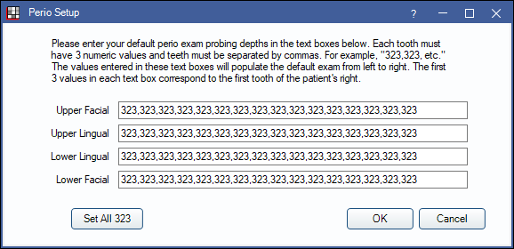
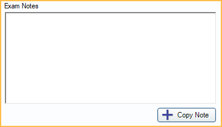
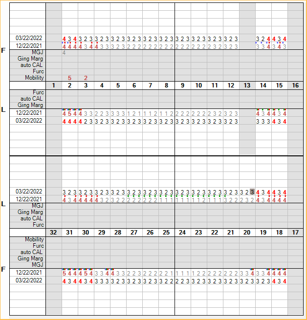
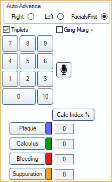
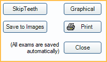

Perio Chart
Use the perio chart to record perio exams.
In the Chart Module, click Perio Chart.
 See our video: Perio Charting.
See our video: Perio Charting.
Setup
Setup: Click to edit default perio exam probing depths. Enter measurements in sets of three, separated by a comma (e.g., 323, 323, etc) for each tooth. Each box requires 48 digits.

- Upper Facial: Enter probing depths for the upper facial teeth from left to right.
- Upper Lingual: Enter probing depths for the upper lingual teeth from left to right.
- Lower Lingual: Enter probing depths for the lower lingual teeth from left to right
- Lower Facial: Enter probing depths for the lower facial teeth from left to right.
- Set All 323: Automatically set probing depths of "323" for all teeth. This will override any measurements currently entered.
- OK: Save changes and close window.
- Cancel: Close window without saving changes.
Exams
Up to six of the most recent exams can show for easy comparison.

- Double-click an exam to edit the date or provider. By default, the provider on a new exam is the patient's primary provider.
- Add: Add a new perio exam.
- Copy: Copy the last exam entered (the exam with the most recent date).
- Default: Add a new perio exam with default measurements.
- Delete: Delete the selected exam.
- Show current exam only: Only show data for the current exam. This is a user preference and will be remembered the next time the same user opens the perio chart.
Exam Notes
Type relevant exam notes here for the current exam only. If exam notes are entered before a new exam is started, notes will be erased.
- Copy Note: Copy the current exam notes to the user's clipboard.
Perio Chart
Data from prior exams shows in gray. Current exam data shows in dark text. Probing depths show for all exams. For other measurements only the most recent data shows.
Rows:
- Probing: Each dated exam shows on its own row.
- Mobility: Only shows on the facial. Only allowed one number for each tooth in the middle cell. There is no mechanism yet to show +.
- Furcation: Enter 0-3. Earlier versions will show a V or a triangle instead of the numbers.
- auto CAL: Clinical Attachment Loss is auto calculated as Probing + Gingival Margin. Users are not allowed to edit.
- Gingival Margin: Gingival margins are implied negative values (recession). When the gingival margin is coronal to the CEJ, a + number can be charted in one of two ways.
- Check the Ging Marg+ box, enter the positive value(s) using the keypad or keyboard, then uncheck the box. or
- On the keyboard, press Ctrl + the number (e.g., Ctrl + 3 = +3).
- Mucogingival Junction: This can be charted on the facial of the maxillary, and facial and lingual of the mandibular.
Entering Data
Auto Advance: Shows the current path direction.
- Right and Left: Follows the order below. When it gets to the end of an arch, it drops to a new row and the Right/Left direction changes automatically.
- 1-16 facial
- 16-1 lingual
- 32-17 facial
- 17-32 lingual
- FacialsFirst: Follows this path:
- 1-16 facial
- 17-32 facial
- 32-17 lingual
- 16-1 lingual
Triplets: The triplet option is handy for entering lots of plaque, calculus, gingival margins, or any other measurements that tend to be the same for the entire tooth. When in triplet mode, the backspace key deletes three at a time and editing an existing entry will overwrite three at a time, so be careful to turn it off when done.
Ging Marg+: Check to enter positive values.
Microphone: Click to begin Voice Perio Charting.
Number Entry: Press the numbers on screen or use your keyboard.
- On the screen: For numbers greater than 9, click 10 button followed by the second digit (10 + 9 = 19).
- On your keyboard: For numbers greater than 9, press Ctrl + the second number (Ctrl + 3 = 13). Backspace and Delete work as normal.
- A string of alphanumeric characters entered in a different text editor can also be copy and pasted into the grid (e.g. 1B1211C22S...), using Ctrl+V.
Plaque, Calculus, Bleeding, and Suppuration: Enter using the on-screen button, or a keyboard letter P, C, B, or S.
- These are entered on the same rows as the probing depths.
- They show as colored dots above each probing number. There is room for all four colored dots to show.
- These can be entered while charting probling depths or seperately. If entering at the same time as the probing depths, enter the probing depth first (e.g., 5-bleeding).
- When entering the probing depth, Open Dental automatically advances to the next cell, but if the cell is empty, the program knows to enter the item on the previous probing entry. Customize colors for each by clicking the color boxes on the right.
- Statuses can be added to skipped teeth by manually selecting the gray cell for the skipped tooth.
Calc Index %: Click to recalculate the four index percentages.
- Calculations are displayed in the box next to the corresponding index.
- Calculations are rounded down to the nearest whole number (e.g., 5.7% displays as 5%).
- Typically there are 6 sites per tooth and 32 teeth, for a total of 192 possible sites. Example: If you have 19 of the 192 sites marked as bleeding, the bleeding index is 10%.
- Teeth marked skipped are not considered available and are excluded from the calculation.
Navigation: There are multiple ways to navigate the perio chart.
- Use the cursor to click into a cell to enter data.
- Use the up, down, right, and left arrows on the keyboard to quickly navigate cells.
- Type J to move to the MGJ row of the select tooth area.
- Type G to move to the Ging Marg row of the selected tooth area.
- Type F to move to the Furc row of the selected tooth area.
- Type M to move to the Mobility row of the selected tooth area.
- Type a period (.) to move to the last probing area.
Numbers in Red
Flag measurements in the grid with red text when greater than or less than a certain value.

- Count Teeth: Click to refresh tooth counts.
- Red if: Click the up/down arrows to change the value. Changes affect both old and new exams. Changes affect all patients.
- For Probing, Ging Marg, CAL, Furc, and Mobility, measurements will be flagged red when they are greater than or equal to the value.
- For MGJ, measurements will be flagged red when less than or equal to the value. The main concern here is that it show sites with little or no attached gingival.
- # Teeth: For each row, shows the number of teeth that are marked in red. The printout will actually list out all the tooth numbers.
Additional Options
Skip Teeth: Select teeth to mark as skipped when perio charting.
- The perio exam will never start on a tooth marked missing.
- Missing teeth that will be skipped are indicated with a gray background, but you can still record measurements if you wish.
- Skipped teeth are automatically skipped during auto advance.
- Skipped teeth are stored with individual perio exams, so each exam can have different teeth skipped.
- Teeth marked skip in a previous exam are automatically marked skip in the next exam.
- To manually mark teeth as skip, select the teeth then click SkipTeeth. To unmark a tooth as skip, select the tooth then click SkipTeeth again.
- Teeth with implants are indicated on the perio chart with an i (e.g. 17i).
Graphical: See Graphical Perio Chart.
Save to Images: Save the current perio chart to the Images module, Tooth Charts folder, named by date.
Print: Print the perio chart as it appears on the screen.
Additional Details
Supernumerary Teeth / Retained Deciduous Teeth:
There is no way to note these on the perio chart. Details about these teeth can be entered as an exam note.
Primary Teeth:
Perio charting can only be done on permanent teeth.
Missing Teeth:
Enable the preference, Perio exams always skip missing teeth, to always skip missing teeth.
Implants:
Enable or disable the preference, Perio exams treat implants as not missing, to determine whether or not teeth with an implant are considered missing.
The two preferences above work together, so if implants are treated as missing, and missing teeth are always skipped, the implants will be skipped.